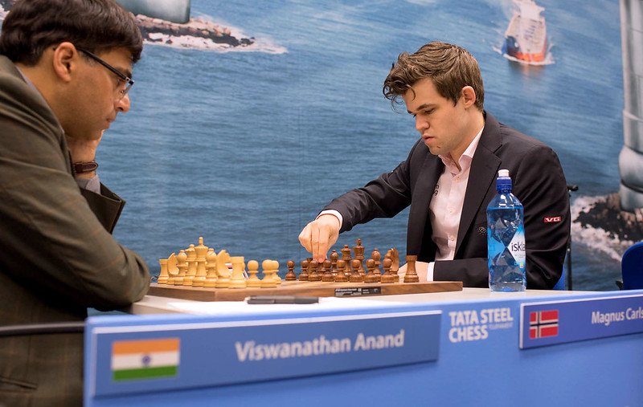

Magnus Carlsen
Magnus Carlsen est un grand maître international norvégien, champion du monde d'échecs depuis 2013. Connu pour son style universel et sa capacité à jouer dans toutes les phases du jeu, il est souvent considéré comme l'un des plus grands joueurs de l'histoire.

Garry Kasparov
Garry Kasparov, grand maître russe, a dominé le monde des échecs de 1985 à 2000. Connu pour sa préparation méticuleuse et ses coups brillants, il reste une inspiration pour de nombreux joueurs.

Bobby Fischer
Bobby Fischer (1943-2008), un génie américain des échecs, a remporté le championnat du monde en 1972 en battant Boris Spassky. Sa vision stratégique et son talent naturel restent inégalés.

Judit Polgar
Judit Polgar est considérée comme la meilleure joueuse d'échecs de tous les temps. Elle a atteint le top 10 mondial et a prouvé que les femmes peuvent rivaliser avec les meilleurs joueurs masculins.

Viswanathan Anand
Viswanathan Anand, grand maître indien, a été champion du monde à plusieurs reprises. Connu pour sa rapidité et sa créativité, il a popularisé les échecs en Inde.
